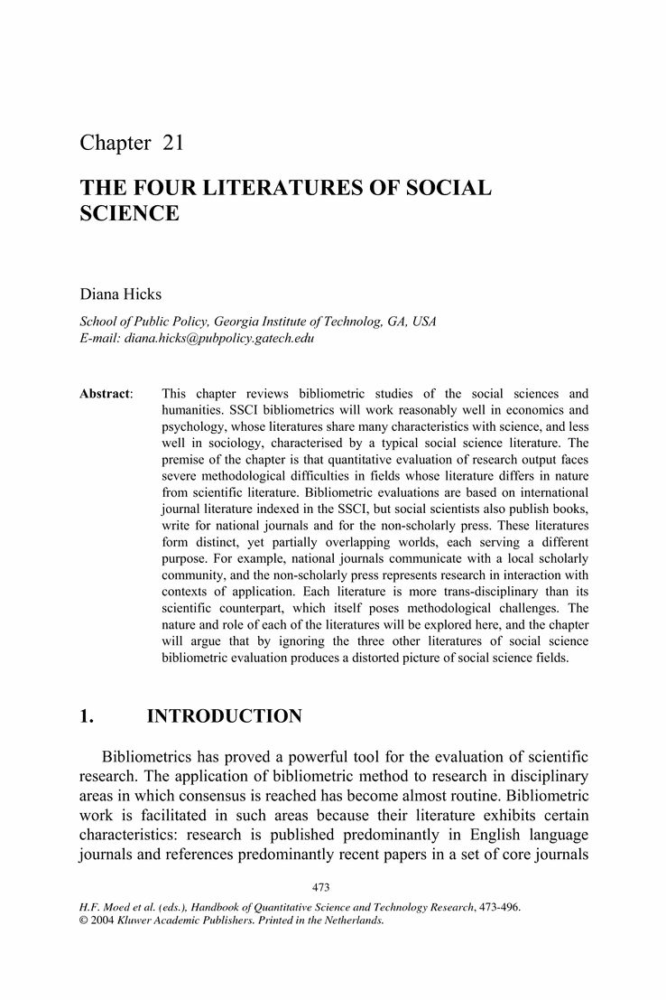
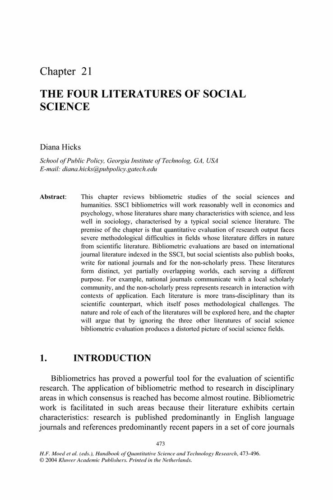

The Four Literatures of Social Science
Abstract
This chapter reviews bibliometric studies of the social sciences and humanities. SSCI bibliometrics will work reasonably well in economics and psychology, whose literatures share many characteristics with science, and less well in sociology, characterised by a typical social science literature. The premise of the chapter is that quantitative evaluation of research output faces severe methodological difficulties in fields whose literature differs in nature from scientific literature. Bibliometric evaluations are based on international journal literature indexed in the SSCI, but social scientists also publish books, write for national journals and for the non-scholarly press. These literatures form distinct, yet partially overlapping worlds, each serving a different purpose. For example, national journals communicate with a local scholarly community, and the non-scholarly press represents research in interaction with contexts of application. Each literature is more trans-disciplinary than its scientific counterpart, which itself poses methodological challenges. The nature and role of each of the literatures will be explored here, and the chapter will argue that by ignoring the three other literatures of social science bibliometric evaluation produces a distorted picture of social science fields.

 

Related Content

- Title
- The Four Literatures of Social Science
- Book Title
- Handbook of Quantitative Science and Technology Research
- Book Subtitle
- The Use of Publication and Patent Statistics in Studies of S&T Systems
- Book Part
- Part 3
- Pages
- pp 473-496
- Copyright
- 2005
- DOI
- 10.1007/1-4020-2755-9_22
- Print ISBN
- 978-1-4020-2702-4
- Online ISBN
- 978-1-4020-2755-0
- Publisher
- Springer Netherlands
- Copyright Holder
- Springer Science + Business Media, Inc.
- Additional Links
- Topics
- eBook Packages
- Editors
-
- Henk F. Moed (1)
- Wolfgang Glänzel (2)
- Ulrich Schmoch (3)
- Editor Affiliations
-
- 1. Centre for Science and Technology Studies, University of Leiden
- 2. Steunpunt O&O Statistieken, K.U. Leuven
- 3. Fraunhofer Institute for Systems and Innovation Research
- Authors
-
-
Diana Hicks
 (4)
(4)
-
Diana Hicks
- Author Affiliations
Continue reading...
To view the rest of this content please follow the download PDF link above.